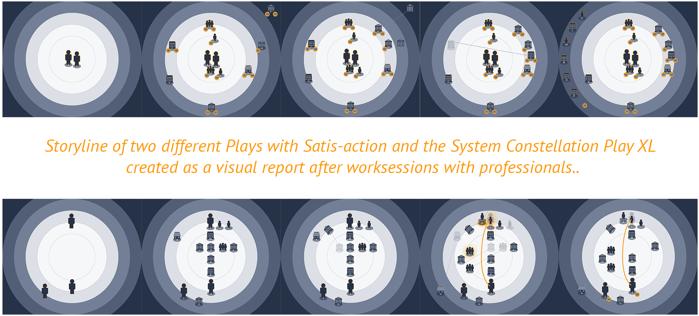

March 2018

Hoe kan een design concept de professional ondersteunen bij de exploratie, visualisatie en het faciliteren van waardecreatie in een multi-stakeholder omgeving?
"Zodra mensen beginnen te handelen, genereren zij tastbare resultaten in een bepaalde context en dit helpt hen te ontdekken wat er gebeurt, wat moet worden uitgelegd en wat er vervolgens moet worden gedaan" (Weick, 1995, p.55). Deze tekst beschrijft de beoogde betekenis van de Satis-action methode waarbij deelnemers samen gaan handelen en tastbare resultaten en een tastbare context genereren van de specifieke casus of het project waarin zij werken. Op die manier ontdekken ze de huidige situatie (awareness), beginnen ze elkaar hun professionele interpretatie van het probleem en de te ondernemen acties uit te leggen (understanding), en identificeren ze zo mogelijke volgende stappen naar een allesomvattende oplossing.

Satis-action is een interactiemethode die de omgeving en de dynamiek van mensen, gemeenschappen en organisaties in een specifiek geval rond mensen onderzoekt. Het System Constellation Play is een communicatiemiddel om de centrale figuren en karakters van deze omgeving visueel en tastbaar te maken.
De techniek van Satis-action en het instrument System Constellation Play ondersteunen professionals bij het vervullen van hun taken en de behoeften en wensen van een individu of organisatie binnen haar complexe systemische omgeving.
De Vakmakerij verzorgt workshops en trainingen over Satis-action. Het gereedschap kan ook via De Vakmakerij worden aangeschaf. De techniek en de gereedschappen worden al gebruikt in verschillende conferenties en (bijna) echte situaties. Voor meer informatie zie ook de website over Satis-action.